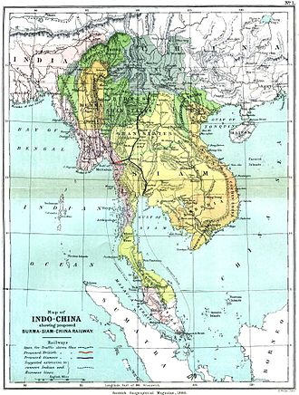
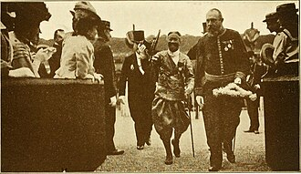
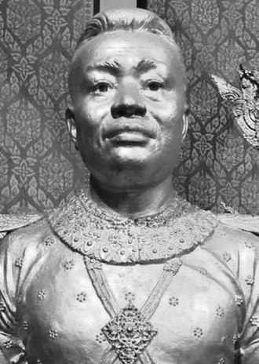

អាណាព្យាបាលបារាំងនៃកម្ពុជាបានបង្កើតប៉ែកនៃចក្រភពអាណានិគមបារាំងនៅកម្ពុជា។ ដែនអាណាព្យាបាលនេះត្រូវបានបង្កើតឡើងនៅឆ្នាំ ១៨៦៧ នៅពេសស្ដេចខ្មែរ ព្រះបាទនរោត្តមបានសុំឱ្យមានការបង្កើតអាណាព្យាបាលបារាំងលើប្រទេសរបស់ទ្រង់ ខណៈនោះ សៀម (ថៃទំនើប) បានលះបង់អធិរាជភាពលើកម្ពុជា និងទទួលស្គាល់អាណាព្យាបាលបារាំងនៅកម្ពុជាជាផ្លូវការ។ កម្ពុជាត្រូវបានធ្វើសមាហរណកម្មទៅជាសហភាពឥណ្ឌូចិននៅឆ្នាំ ១៨៨៧ រួមគ្នាជាមួយដែនអាណានិគម និងអាណាព្យាបាលបារាំងនៅវៀតណាម (កូសាំងស៊ីន អណ្ណាម និង តុងកឹង)។ នៅឆ្នាំ ១៩៤៦ កម្ពុជាទទួលបានសិទ្ធិគ្រប់គ្រងដោយខ្លួនឯង ក្នុងសហភាពបារាំង និងស្ថានភាពអាណាព្យាបាលត្រូវបានលុបបំបាត់នៅឆ្នាំ ១៩៤៩។ កម្ពុជាក្រោយមកបានទទួលបានឯករាជ្យ និងថ្ងៃឯករាជ្យត្រូវបានប្រារព្ធឡើងនៅថ្ងៃទី៩ វិច្ឆិកា ១៩៥៣។ ប្រទេសកម្ពុជា បានស្ថិតនៅក្រោមអាណានិគមនិយមបារាំង អស់ជិតមួយសតវត្សដោយគិតចាប់ពីឆ្នាំ ១៨៦៣ រហូតដល់ពេលទទួលបានឯករាជ្យនៅឆ្នាំ ១៩៥៣។ នៅឆ្នាំ ១៨៦៣ កម្ពុជាក្រោមរជ្ជកាលរបស់ព្រះបាទនរោត្តមបានប្រែក្លាយប្រទេសរបស់ទ្រង់ឱ្យស្ថិតនៅក្រោមអាណាព្យាបាលបារាំង។ នៅខែ តុលា ១៨៨៧ ពួកបារាំង បានប្រកាសការបង្កើត Union Indochinoise (សហភាពឥណ្ឌូចិន) ដែលនៅពេលនោះក៏បានបញ្ចូលកម្ពុជាផងដែរ សិទ្ធិជាម្ចាស់របស់បារាំងមានជាស្វ័យតរួចរាល់ទៅហើយ ជាមួយនិងតំបន់ទាំងបីនៃប្រទេសវៀតណាម (តុងកឹង អណ្ណាម និង កូសាំងស៊ីន)។ នៅឆ្នាំ ១៨៩៣ លាវ ត្រូវបានរាប់បញ្ចូលបន្ទាប់ពីពួកបារាំងបានគំរាមកំហែង ដល់ព្រះបាទចុល្លាង្ករណ៍សៀមថានឹងអាចមានសង្គ្រាម ដោយហេតុនោះហើយក៏បង្ខំអោយទ្រង់បោះបង់ចោលទឹកដីនោះទៅ។
ព្រះបាទនរោត្តម គឺជាមហាក្សត្រនៃកម្ពុជា ព្រះអង្គយល់ព្រមដាក់ប្រទេសកម្ពុជាឲ្យស្ថិតនៅក្រោមអាណាព្យាបាលរបស់បារាំង
កំឡុងសតវត្សទី១៩ ព្រះរាជាណាចក្រកម្ពុជាបានដោះខ្លួនពីរដ្ឋចំណុះនៃនគរសៀមដែលបានដាក់បញ្ចូលខេត្តភាគខាងលិចរបស់ប្រទេសនេះ រួមមានអង្គរ ដែលកាលណោះឥទ្ធិពលអំណាចរបស់រាជវង្សង្វៀនយួនបានធំធាត់ឡើងដែលជាការគំរាមកំហែងដល់ប៉ែកខាងកើតនៃប្រទេស។ បន្ទាប់ពីការបង្កើតអាណានិគមបារាំងនៅកូសាំងស៊ីន (វៀតណាមខាងត្បូងសម័យបច្ចុប្បន្ន) នៅឆ្នាំ ១៨៦៧ ព្រះបាទនរោត្តមកម្ពុជាបានស្នើសុំឱ្យបារាំងដាក់អាណាព្យាបាលលើនគររបស់ទ្រង់។ នៅពេលនោះ លោក ព្យាំរប៉ូល-ដឺ-ឡា-ហ្គ្រង់ឌ្យែរ ទេសាភិបាលអាណានិគមកូសាំងស៊ីន កំពុងបន្តផែនការដើម្បីពង្រីកអំណាចបារាំងលើវៀតណាមទាំងមូលហើយបានប្រមើលឃើញកម្ពុជាជាប្រទេសទ្រនាប់រវាងដែនកម្មសិទ្ធិបារាំងនៅវៀតណាមនិងសៀម។ នៅថ្ងៃ ១១ សីហា ១៨៦៣ ព្រះបាទនរោត្តមបានចុះព្រះហស្ថលេខាលើសន្ធិសញ្ញាមួយដែលទទួលស្គាល់អាណាព្យាបាលបារាំងលើព្រះរាជាណាចក្ររបស់ទ្រង់។ ស្ថិតនៅក្រោមសន្ធិសញ្ញានេះ របបរាជានិយមនៅកម្ពុជាត្រូវបានបន្សល់ឱ្យនៅមានដដែល ក៏ប៉ុន្តែអំណាចត្រូវបានស្ថិតក្នុងដៃនៃឯកាធិបតីដ៏ច្រើនសម្បើមដែលមានទីតាំងនៅភ្នំពេញ។ បារាំងក៏ទទួលបន្ទុកលើទំនាក់ទំនងការបរទេសនិងពាណិជ្ជកម្មរបស់កម្ពុជាផងដែរ ដូចគ្នាបារាំងក៏ផ្ដល់នូវការការពារខាងយោធា។ សៀមក្រោយមកបានទទួលស្គាល់អាណាព្យាបាលរបស់បារាំងបន្ទាប់ពីបារាំងបានប្រគល់ខេត្តបាត់ដំបងរបស់កម្ពុជា និងទទួលស្គាល់ការគ្រប់គ្រងរបស់ថៃនៅអង្គរ។[១][២] នៅឆ្នាំ ១៨៦២ បន្ទាប់ពីដំណើររបស់ឧត្ដមនាវីបូណា (ទេសាភិបាលបារាំងប្រចាំក្រុងព្រៃនគរ) មកកម្ពុជា បារាំងយល់ថា ភូមិសាស្ត្រអាចឱ្យបារាំងបង្កើតមូលដ្ឋានបន្តដំណើរទៅកាន់កាប់ទិសឧត្ដរ និងបស្ចិមនៃឥណ្ឌូចិន ព្រមទាំងអាចបង្កើតរបាំងខណ្ឌដែនដី ដែលកាន់កាប់ដោយបារាំង និងអង់គ្លេសនៅឥណ្ឌូចិន។ បារាំងឱ្យលោក ឡាក្រង់ឌីយែ មកចរចាបញ្ចុះបញ្ចូល ព្រះបាទនរោត្ដម (១៨៦១-១៩០៤) ឱ្យយល់ព្រមចុះព្រះហស្ថលេខាលើសន្ធិសញ្ញាស្ដីពីអាណាព្យាបាលបារាំងលើប្រទេសកម្ពុជា ថ្ងៃ ១១ សីហា ១៨៦៣។ ប្រទេសសៀម ប្រឆាំងយ៉ាងខ្លាំងនឹងសន្ធិសញ្ញានេះ ហើយធ្វើការគំរាមកំហែង ព្រះបាទនរោត្ដមដោយមិនព្រមប្រគល់ម្កុដរាជ និងគ្រឿងរាជកកុធភណ្ឌមកថ្វាយព្រះអង្គវិញទេ។ ពួកមន្ត្រីខ្មែរដែលមាននិន្នាការលំអៀងទៅខាងសៀមបានទាក់ទាញ ព្រះបាទនរោត្ដម ឱ្យវិលមករកសៀមវិញ។ ប៉ុន្តែ បារាំងបានប្រឆាំងតបវិញ ដោយបញ្ជូនកប៉ាល់ប្រាំគ្រឿង និងទាហានជើងទឹក ១០០ នាក់ ឡើងមកកាន់រាជធានីឧត្ដុង្គ និងទីក្រុងភ្នំពេញ។
ផែនទីឥណ្ឌូចិន ដែលមានប្រទេសកម្ពុជា កូសាំងស៊ីន អណ្ណាម និង តុងកឹង នៅឆ្នាំ១៨៨៦
បារាំងបានយល់ព្រមប្រគល់ខេត្តបាត់ដំបង និងសៀមរាបឱ្យទៅសៀម និងធ្វើកិច្ចព្រមព្រៀងមួយជាមួយសៀម ស្ដីពីពិធីរាជាភិសេកព្រះបាទនរោត្ដមជាព្រះមហាក្សត្រពេញលក្ខណៈនៅរាជធានីឧដុង្គ នាថ្ងៃ ៣ មិថុនា ១៨៦៤។ មកដល់ឆ្នាំ ១៨៦៧ ទើបសៀមព្រមទទួលស្គាល់សិទ្ធិរបស់ប្រទេសបារាំង ដើម្បីដាក់របបអាណាព្យាបាលមកលើកម្ពុជា។ អាសនៈនៃអគ្គទេសាភិបាលសម្រាប់សហភាពឥណ្ឌូចិនទាំងមូលមានទីតាំងនៅហាណូយ ដែលស្ថិតនៅតុងកឹង (ឥឡូវគឺវៀតណាមខាងជើង)។ កម្ពុជា ក៏ជារដ្ឋអាណាព្យាបាលរួមផ្សំនៃសហភាពឥណ្ឌូចិនដែរ ដែលត្រូវបានគ្រប់គ្រងដោយ Résident Supérieur (រេស៊ីដង់ស៊ុពែរីយ៉េ) រឺ ឯកាធិបតី សម្រាប់កម្ពុជា ដែលត្រូវបានតែងតាំងដោយផ្ទាល់ដោយ ក្រសួងជើងទឹកនិងអាណានិគមនៅប៉ារីស។ ឯកាធិបតី (រេស៊ីដង់ស៊ុពែរីយ៉េ) គឺនៅពេលនោះត្រូវបានជួយដោយពួកឯកាភិបាល (រេស៊ីដង់) រឺ ពួកអភិបាលក្នុងតំបន់ (ចៅហ្វាយខេត្ត) ដែលត្រូវបានគេដាក់នៅតាមមជ្ឈមណ្ឌលខេត្តនានា (ទីរួមខេត្ត) ដូចជា បាត់ដំបង ពោធិ៍សាត់ ឧដុង្គ និង សៀមរាប។ ភ្នំពញ ជារាជធានី គឺត្រូវស្ថិតនៅក្រោមការគ្រប់គ្រងដោយផ្ទាល់របស់ឯកាធិបតី (រេស៊ីដង់ស៊ុបពែរីយ៉េ)។ ឯកាធិបតីបានក្ដោបក្ដាប់អំណាចដ៏សន្ធឹកសន្ធាប់ ក៏ប៉ុន្តែបុគ្គលដែលនៅក្នុងតំណែងនេះជារឿយៗចង់បានអំណាចលើសពីនេះទៀត។ នៅឆ្នាំ ១៨៩៧ ឯកាធិបតីដែលកំពុងតែកាន់តំណែង បានត្អូញត្អែរទៅទីក្រុងប៉ារីសថាស្ដេចបច្ចុប្បន្ននៃកម្ពុជា ព្រះបាទនរោត្តមលែងសាកសមដើម្បីដឹកនាំ និងស្នើសុំកាន់អំណាចរបស់ស្ដេចដើម្បីប្រមូលពន្ធ ចេញរាជក្រិត្យ និងសូម្បីតែតែងតាំងមន្ត្រីរាជការ និងជ្រើសរើសពួកព្រះអង្គម្ចាស់ម្កុដរាជ្យ (ព្រះបុត្រាស្នងរាជ្យ)។ ចាប់ពីពេលនោះមក ព្រះបាទនរោត្តម និងពួកស្ដេចនាពេលអនាគតរបស់កម្ពុជាក្លាយជាស្ដេចដែលមានតែឈ្មោះ និងជាឧបត្ថាកសាសនាព្រះពុទ្ធនៅកម្ពុជា ទោះយ៉ាងណាក្ដីក៏ពួកទ្រង់នៅតែមើលឃើញថាជាស្ដេចទេវរាជតាមរយៈក្រសែភ្នែករបស់ប្រជាជនស្រុកស្រែចម្ការដដែល។ អំណាចផ្សេងៗទាំងអស់គឺនៅក្នុងកណ្ដាប់ដៃនៃពួកឯកាធិបតី (រេស៊ីដង់ស៊ុបពែរីយ៉េរ) និងការិយាធិបតេយ្យអាណានិគម។ យ៉ាងណាក៏ដោយ ការិយាធិបតេយ្យនេះគឺត្រូវបានបង្កើតឡើងដោយពួកមន្ត្រីបារាំងភាគច្រើនបំផុត និងជនជាតិមួយទៀតដែលត្រូវបានគេអនុញ្ញាតដោយសេរីគឺពួកជនជាតិយួន ដែលគេឃើញថាជាពួកជនជាតិអាស៊ីដែលត្រួតត្រាគេនៅសហភាពឥណ្ឌូចិន។ នៅឆ្នាំ ១៩០៤ ព្រះបាទនរោត្តមបានសោយទិវង្គត។ ផ្ទុយពីផ្ទេររាជបល្ល័ង្កបន្តអោយទៅរាជបុត្រារបស់ព្រះនរោត្តម ពួកបារាំងបានផ្ទេររាជ្យសម្បត្តិទៅព្រះភាតារបស់ព្រះនរោត្តម គឺព្រះបាទស៊ីសុវត្ថិ ដែលខ្សែរាជវង្សរបស់ទ្រង់មិនរឹងរូស និងជាតិនិយមតិចចំពោះការគ្រប់គ្រងរបស់បារាំងជាងខាងព្រះនរោត្តម ដែលបានបង្ហាញថាជាខ្សែរាជវង្សជាតិនិយមខ្លាំង។ ដូចដែរ គេបានឃើញថាព្រះនរោត្តម ជាអ្នកទទួលខុសត្រូវចំពោះការបះបោរខ្មែរឥតឈប់ឈរប្រឆាំង នឹងការគ្រប់គ្រងរបស់បារាំង។ ហេតុផលផ្សេងមួយទៀតគឺថារាជបុត្រជាទីសព្វព្រះរាជហឫទ័យរបស់ព្រះនរោត្តម ដែលទ្រង់ចង់អោយសោយរាជ្យបន្តព្រះអង្គ ជាព្រះមហាក្សត្រ គឺព្រះអង្គម្ចាស់យុគន្ធរ បានធ្វើដំណើរទៅកាន់អឺរ៉ុប បង្កភាពវឹកវរដោយលើកឡើងជាសាធារណៈអំពីភាពឃោរឃៅព្រៃផ្សៃនៃអាណានិគមបារាំងនៅកម្ពុជា ដែលពួកគេកំពុងតែបានគ្រប់គ្រងកាន់កាប់។
ដំណើរទស្សនកិច្ចរបស់ព្រះបាទស៊ីសុវត្ថិនៃព្រះរាជាណាចក្រកម្ពុជាទៅប្រទេសបារាំងឆ្នាំ១៩១១
នៅគ្រានោះដែរ ក្នុងរាជ្យព្រះបាទស៊ីសុវត្ថិ និងបុត្ររបស់ទ្រង់ ព្រះបាទស៊ីសុវត្ថិ មុនីវង្ស ប្រទេសមានសន្តិភាព ទោះបីជាក្សត្រទាំងពីរអង្គគ្មានអំណាចអ្វីសោះឡើយ ដោយហេតុតែពួកទ្រង់ជាតុក្កតា និងឧបករណ៍ដែលអាចបត់បែនបានដោយពួកបារាំង។ កំឡុងរជ្ជកាលរបស់ព្រះស៊ីសុវត្ថិ ពួកបារាំងបានសម្រេចជោគជ័យក្នុងការធ្វើឱ្យស្ដេចកំណែទម្រង់របស់ប្រទេសថៃ ព្រះបាទចុល្លាង្ករណ៍ចុះហត្ថលេខាលើសន្ធិសញ្ញាថ្មីមួយនៅឆ្នាំ ១៩០៧ ដែលនាំត្រឡប់មកវិញនូវខេត្តភាគពាយព្យ បាត់ដំបង និងសៀមរាបត្រលប់មកក្រោមការគ្រប់គ្រងរបស់កម្ពុជាវិញ។ ក្នុងន័យនេះ ខ្សែរាជវង្សខាងព្រះស៊ីសុវត្ថិត្រូវបានគេមើលឃើញថាបាននាំយកទឹកដីមកឱ្យប្រទេសខ្មែរវិញ ត្បិត កម្ពុជាស្ថិតនៅក្រោមការគ្រប់គ្រងនៃអាណានិគមបារាំងយ៉ាងសង្កត់សង្កិតយ៉ាងណាក៏ដោយ។
រូបគំនូររបស់ព្រះបាទអង្គដួងជួបសំណេះសំណាលជាជនបរទេសដកស្រង់ចេញពីបណ្ណល័យអងគ្លេស
រហូតមកដល់ស.វ. ទី១៩ គឺក្នុងរាជ្យព្រះបាទអង្គឌួង (១៨៤១ - ១៨៦០) ប្រទេសខ្មែរនៅតែស្ថិតក្រោមអំណាចសៀម និងយួននៅឡើយ។ ពួកនេះនៅប្រចាំការអមព្រះអង្គ ដើម្បីសម្រេចកិច្ចការរបស់ខ្មែរ។ ចាប់តាំងពីបានឡើងសោយរាជ្យមក ព្រះបាទអង្គឌួងទ្រង់តូចព្រះទ័យយ៉ាងខ្លាំងចំពោះការបាត់បង់ទឹកដីយ៉ាងច្រើន ដែលពួកយួន និងសៀមប្រវ័ញ្ចយកទៅដោយខុសច្បាប់។ ព្រះអង្គបានខិតខំរកគ្រប់មធ្យោបាយដើម្បីរំដោះទឹកដី និងគេចឲ្យផុតពីភាពចំណុះគេនេះ។
ព្រះបាទអង្គដួង គឺជាព្រះមហាក្សត្រខ្មែរដែលទៅពឹងពាក់ឲ្យដាក់អាណានិគមនិយមនៅកម្ពុជា ដើម្បីគេចចេញពីក្រោមការត្រួតត្រារបស់យួននិងសៀម តែមិនបានសម្រេច។
នៅឆ្នាំ ១៨៥៤ បព្វជិតបារាំងម្នាក់ឈ្មោះមីស (Miche) ដែលស្និទ្ធនឹងព្រះអង្គឌួង បានថ្វាយយោបល់ដល់ព្រះអង្គឲ្យធ្វើទំនាក់ទំនងជាមួយព្រះចៅអធិរាជបារាំងណាប៉ូលេអុងទី៣ ដើម្បីឲ្យបារាំងជួយការពារប្រទេសកម្ពុជា។ ក្រោយពីទទួលលិខិតនិងដង្វាយ ណាប៉ូលេអុងទី៣បានបញ្ជូនគណៈប្រតិភូរបស់ខ្លួនគឺលោកដឺម៉ុងទីញី ឲ្យមកកម្ពុជាយ៉ាងរួសរាន់ (១៨៥៥) ដើម្បីពិនិត្យស្ទាបស្ទង់ស្ថានភាព។ គ្រាន់តែលោកដឺម៉ុងទីញីមកដល់កំពតភ្លាម សៀមបានដឹងកិច្ចការនេះ ហើយបានប្រឆាំងយ៉ាងខ្លាំងក្លា។ សៀមបានកំហែងព្រះបាទអង្គឌួងថា បើព្រះអង្គចុះសន្ធិសញ្ញាសម្ព័ន្ធភាពនឹងបារាំងដែលមានដឺម៉ុងទីញីជាតំណាងនោះ សៀមនឹងលើកទ័ពចូលមកកម្ទេចខ្មែរមិនខាន ហើយពុំព្រមប្រគល់គ្រឿងរាជកកុធភ័ណ្ឌថ្វាយមកព្រះអង្គឡើយ។ ដូចនេះសៀមពុំបានធ្វើឲ្យព្រះបាទអង្គឌួងសម្រេចព្រះបំណងឡើយ។ នៅថ្ងៃទី១៩ តុលា ឆ្នាំ១៨៦០ ព្រះបាទអង្គឌួងបានចូលទិវង្គត។ រាជបុត្រច្បងរបស់ព្រះអង្គ គឺសត្ថាច្រឡឹងឡើងគ្រងរាជសម្បត្តិស្នង ដោយមាននាមសម្រាប់រាជ្យថាព្រះបាទនរោត្ដម។